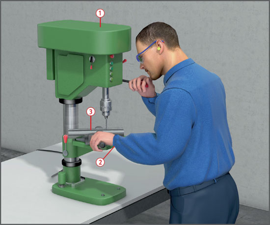
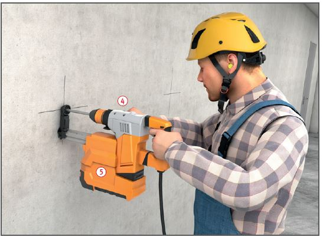

Gefährdungen
- Materialien, Kleidung und Handschuhe könnten sich um bewegte Maschinenteile wickeln und dies kann zu schweren Verletzungen führen.
- Durch die Rotation können Späne, Materialien wegfliegen und ggf. die Augen schädigen.

Schutzmaßnahmen
- Auf Verkleidung des Antriebs achten
 .
.
- Nur Spannvorrichtungen mit verdeckten oder versenkten Schrauben benutzen.
- Werkstücke beim Bohren sicher festspannen bzw. auflegen
 . Lange Werkstücke unterstützen.
. Lange Werkstücke unterstützen.
- Vor dem Einschalten der Maschine Bohrfutterschlüssel abziehen.
- Die Bohrmaschine nie einschalten, wenn der Bohrer auf dem Werkstück aufgesetzt ist.
- Nicht an laufender Bohrspindel vorbeigreifen.
- Niemals bei laufender Maschine ein- oder ausspannen.
- Bohrfutter oder Bohrer nie mit der Hand abbremsen.
- Maschine nur bei Stillstand säubern.
- Geeignete Spänehaken und ggf. Handfeger benutzen.
- Ringe, Ketten, Armbanduhren oder ähnliche Gegenstände vor Arbeitsbeginn ablegen.
- Eng anliegende Kleidung tragen, Ärmel nach innen umschlagen
 .
.
- Niemals Handschuhe tragen.
- Langes Haar schützen.
- Beim Bohren spröder Werkstoffe Schutzbrille benutzen.
Zusätzliche Hinweise
Ständerbohrmaschinen
- Nur standsichere Bohrständer mit auf das Gewicht der Bohrmaschine abgestimmter Rückstellfeder benutzen.
- Maschinentisch nach Höhenverstellung wieder feststellen.
Magnetständerbohrmaschinen
- Auf einwandfreie magnetische Ankopplung des Ständerfußes achten (Werkstückoberflächen müssen frei von Rost, Farbe, Spänen usw. sein).
- An hoch gelegenen Arbeitsplätzen sowie bei Vertikal- und Überkopfbohrarbeiten Bohrmaschine mit Seil oder Kette gegen Herabfallen bei evtl. Stromausfall sichern.
Handbohrmaschinen
- Maschine mit beiden Händen halten.
- Zusatzhandgriffe benutzen
 .
.
- Vor Bohrerwechsel Netzstecker ziehen.
- Bohrmaschine nur im Stillstand ablegen.
- Bohrarbeiten nicht von der Anlegeleiter ausführen.
- Beim Bohren mit Freisetzung gesundheitsschädlicher Stäube (z. B. mineralischer Staub, Holzstaub) Maschinen mit Erfassung der Stäube an der Emissionsquelle
 verwenden.
verwenden.
- Beim Bohren spröder Werkstoffe in Augenhöhe und über dem Kopf Schutzbrille benutzen.
Zusätzliche Hinweise bei der Verwendung von Kühlschmierstoffen
- Zum Kühlen möglichst Wasser oder nichtwassermischbare Kühlschmierstoffe, z. B. Bohr- oder Schneidöle, verwenden.
- Bei der Verwendung von wassergemischten Kühlschmierstoffen, z. B. Emulsionen, Nitritgehalt und pH-Wert mindestens wöchentlich überprüfen.
- Nicht mehr verwendungsfähige Kühlschmierstoffe in Behältern sammeln, kennzeichnen und fachgerecht als Sonderabfall entsorgen.
- Hautkontakt mit Kühlschmierstoffen vermeiden. Schutzbrillen oder Gesichtsschutz, wenn die Kleidung benetzt werden kann, auch Schutzschürzen benutzen. Hautschutzmittel verwenden.
Arbeitsmedizinische Vorsorge
- Arbeitsmedizinische Vorsorge nach Ergebnis der Gefährdungsbeurteilung veranlassen (Pflichtvorsorge) oder anbieten (Angebotsvorsorge). Hierzu Beratung durch den Betriebsarzt.
07/2019